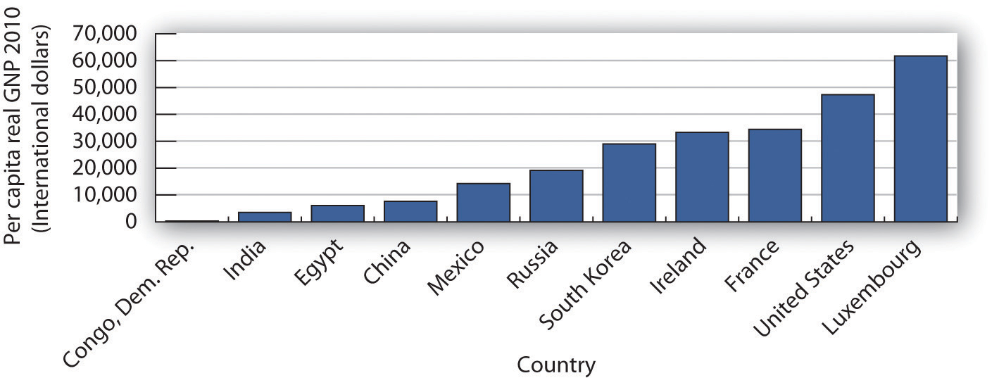

GDP is the measure most often used to assess the economic well-being of a country. Besides measuring the pulse of a country, it is the figure used to compare living standards in different countries.
Of course, to use GDP as an indicator of overall economic performance, we must convert nominal GDP to real GDP, since nominal values can rise or fall simply as a result of changes in the price level. For example, the movie Avatar, released in 2009, brought in $761 million—the highest amount to date in gross box office receipts, while Gone with the Wind, released in 1939, earned only $199 million and ranks 117th in terms of nominal receipts. But does that mean that Avatar actually did better than Gone with the Wind? After all, the average price of a movie ticket in 1939 was about 25 cents. At the time of Avatar, the average ticket price was about $7.50. A better way to compare these two movies in terms of popularity is to control for the price of movie tickets—the same strategy that economists use with real GDP in order to determine whether output is rising or falling. Adjusting the nominal box-office receipts using 2012 movie prices to obtain real revenue reveals that in real terms Gone with the Wind continues to be the top real grosser of all time with real box-office receipts of about $1.6 billion. Avatar’s real box-office receipts amounted to a mere $776 million.Based on estimates at “Domestic Grosses Adjusted for Ticket Price Inflation,” Box Office Mojo, accessed April 10, 2012, http://boxofficemojo.com/alltime/adjusted.htm. As illustrated by this example on revenues from popular movies, we might draw erroneous conclusions about performance if we base them on nominal values instead of on real values. In contrast, real GDP, despite the problems with price indexes that were explained in another chapter, provides a reasonable measure of the total output of an economy, and changes in real GDP provide an indication of the direction of movement in total output.
We begin this section by noting some of the drawbacks of using real GDP as a measure of the economic welfare of a country. Despite these shortcomings, we will see that it probably remains our best single indicator of macroeconomic performance.
There are two measurement problems, other than those associated with adjusting for price level changes, in using real GDP to assess domestic economic performance.
The first estimate of real GDP for a calendar quarter is called the advance estimate. It is issued about a month after the quarter ends. To produce a measure so quickly, officials at the Department of Commerce must rely on information from relatively few firms and households. One month later, it issues a revised estimate, and a month after that it issues its final estimate. Often the advance estimate of GDP and the final estimate do not correspond. The recession of 2001, for example, began in March of that year. But the first estimates of real GDP for the second and third quarters of 2001 showed output continuing to rise. It was not until later revisions that it became clear that a recession had been under way.
But the revision story does not end there. Every summer, the Commerce Department issues revised figures for the previous two or three years. Once every five years, the department conducts an extensive analysis that traces flows of inputs and outputs throughout the economy. It focuses on the outputs of some firms that are inputs to other firms. In the process of conducting this analysis, the department revises real GDP estimates for the previous five years. Sometimes the revisions can paint a picture of economic activity that is quite different from the one given even by the revised estimates of GDP. For example, revisions of the data for the 1990–1991 recession issued several years later showed that the recession had been much more serious than had previously been apparent, and the recovery was more pronounced. Concerning the most recent recession, the first estimates of fourth quarter 2008 GDP showed that the U.S. economy shrank by 3.8%. The first revision, however, showed a drop of 6.8%, and the second revision showed a drop of 8.9%!
Another problem lies in estimating production in the service sector. The output of goods in an economy is relatively easy to compute. There are so many bushels of corn, so many pounds of beef. But what is the output of a bank? Of a hospital? It is easy to record the dollar value of output to enter in nominal GDP, but estimating the quantity of output to use in real GDP is quite another matter. In some cases, the Department of Commerce estimates service sector output based on the quantity of labor used. For example, if this technique were used in the banking industry and banking used 10% more labor, the department would report that production has risen 10%. If the number of employees remains unchanged, reported output remains unchanged. In effect, this approach assumes that output per worker—productivity—in those sectors remains constant when studies have indicated that productivity has increased greatly in the service sector. Since 1990 progress has been made in measurement in this area, which allows in particular for better estimation of productivity changes and price indexes for different service sector industries, but more remains to be done in this large sector of the U.S. economy.Jack E. Triplett and Barry P. Bosworth, “The State of Data for Services Productivity Measurement in the United States,” International Productivity Monitor 16 (Spring 2008): 53–70.
A second set of limitations of real GDP stems from problems inherent in the indicator itself. Real GDP measures market activity. Goods and services that are produced and exchanged in a market are counted; goods and services that are produced but that are not exchanged in markets are not.There are two exceptions to this rule. The value of food produced and consumed by farm households is counted in GDP. More important, an estimate of the rental values of owner-occupied homes is included. If a family rents a house, the rental payments are included in GDP. If a family lives in a house it owns, the Department of Commerce estimates what the house would rent for and then includes that rent in the GDP estimate, even though the house’s services were not exchanged in the marketplace.
Suppose you are considering whether to eat at home for dinner tonight or to eat out. You could cook dinner for yourself at a cost of $5 for the ingredients plus an hour or so of your time. Alternatively, you could buy an equivalent meal at a restaurant for perhaps $15. Your decision to eat out rather than cook would add $10 to the GDP.
But that $10 addition would be misleading. After all, if you had stayed home you might have produced an equivalent meal. The only difference is that the value of your time would not have been counted. But surely your time is not worthless; it is just not counted. Similarly, GDP does not count the value of your efforts to clean your own house, to wash your own car, or to grow your own vegetables. In general, GDP omits the entire value added by members of a household who do household work themselves.
There is reason to believe this omission is serious. Economists J. Steven Landefeld and Stephanie H. McCulla of the U.S. Bureau of Economic Analysis estimated in a 2000 paper the value of household output from 1946 to 1997. Their estimate of household output in 1946 was 50% of reported GDP. Since then, that percentage has fallen, because more women have entered the workforce, so that more production that once took place in households now occurs in the market. Households now eat out more, purchase more prepared foods at the grocery store, hire out child-care services they once performed themselves, and so on. Their estimate for 1997, for example, suggests that household production amounted to 36% of reported GDP.J. Steven Landefeld and Stephanie H. McCulla, “Accounting for Nonmarket Household Production within a National Accounts Framework,” Review of Income & Wealth 46, no. 3 (September 2000): 289–307.
This problem is especially significant when GDP is used to make comparisons across countries. In low-income countries, a much greater share of goods and services is not exchanged in a market. Estimates of GDP in such countries are adjusted to reflect nonmarket production, but these adjustments are inevitably imprecise.
Some production goes unreported in order to evade taxes or the law. It is not likely to be counted in GDP. Legal production for which income is unreported in order to evade taxes generally takes place in what is known as the “underground economy.” For example, a carpenter might build a small addition to a dentist’s house in exchange for orthodontic work for the carpenter’s children. Although income has been earned and output generated in this example of bartering, the transaction is unlikely to be reported for income tax or other purposes and thus is not counted in GDP. Illegal activities are not reported for income taxes for obvious reasons and are thus difficult to include in GDP.
Leisure is an economic good. All other things being equal, more leisure is better than less leisure.
But all other things are not likely to be equal when it comes to consuming leisure. Consuming more leisure means supplying less work effort. And that means producing less GDP. If everyone decided to work 10% fewer hours, GDP would fall. But that would not mean that people were worse off. In fact, their choice of more leisure would suggest they prefer the extra leisure to the goods and services they give up by consuming it. Consequently, a reduction in GDP would be accompanied by an increase in satisfaction, not a reduction.
Suppose a wave of burglaries were to break out across the United States. One would expect people to respond by buying more and louder burglar alarms, better locks, fiercer German shepherds, and more guard services than they had before. To the extent that they pay for these by dipping into savings rather than replacing other consumption, GDP increases. An epidemic might have much the same effect on GDP by driving up health-care spending. But that does not mean that crime and disease are good things; it means only that crime and disease may force an increase in the production of goods and services counted in the GDP.
Similarly, the GDP accounts ignore the impact of pollution on the environment. We might produce an additional $200 billion in goods and services but create pollution that makes us feel worse off by, say, $300 billion. The GDP accounts simply report the $200 billion in increased production. Indeed, some of the environmental degradation might itself boost GDP. Dirtier air may force us to wash clothes more often, to paint buildings more often, and to see the doctor more often, all of which will tend to increase GDP!
More GDP cannot necessarily be equated with more human happiness. But more GDP does mean more of the goods and services we measure. It means more jobs. It means more income. And most people seem to place a high value on these things. For all its faults, GDP does measure the production of most goods and services. And goods and services get produced, for the most part, because we want them. We might thus be safe in giving two cheers for GDP—and holding back the third in recognition of the conceptual difficulties that are inherent in using a single number to summarize the output of an entire economy.
Real GDP or GNP estimates are often used in comparing economic performance among countries. In making such comparisons, it is important to keep in mind the general limitations to these measures of economic performance that we noted earlier. Further, countries use different methodologies for collecting and compiling data.
Three other issues are important in comparing real GDP or GNP for different countries: the adjustment of these figures for population, adjusting to a common currency, and the incorporation of nonmarket production.
In international comparisons of real GNP or real GDP, economists generally make comparisons not of real GNP or GDP but of per capita real GNP or GDPA country’s real GNP or GDP divided by its population., which equals a country’s real GNP or GDP divided by its population. For example, suppose Country A has a real GDP of about $4,000 billion and Country B has a real GDP of about $40 billion. We can conclude that Country A produced 100 times more goods and services than did Country B. But if Country A has 200 times as many people as Country B (for example, 200 million people in Country A and 1 million in Country B), then Country A’s per capita output will be half that of Country B ($20,000 versus $40,000 in this example).
Figure 21.7 "Comparing Per Capita Real GNP, 2010" compares per capita real GNP for 11 countries in 2010. It is based on data that uses a measure called “international dollars” in order to correct for differences in the purchasing power of $1 across countries. The data also attempt to adjust for nonmarket production (such as that of rural families that grow their own food, make their own clothing, and produce other household goods and services themselves).
Figure 21.7 Comparing Per Capita Real GNP, 2010
There is a huge gap between per capita income in one of the poorest countries in the world, the Democratic Republic of Congo, and wealthier nations such as the United States and Luxembourg.
Source: World Bank, World Development Indicators Online
The disparities in income are striking; Luxembourg, the country with the highest per capita real GNP, had an income level nearly 200 times greater than the Democratic Republic of Congo, the country with the lowest per capita real GNP.
What can we conclude about international comparisons in levels of GDP and GNP? Certainly we must be cautious. There are enormous difficulties in estimating any country’s total output. Comparing one country’s output to another presents additional challenges. But the fact that a task is difficult does not mean it is impossible. When the data suggest huge disparities in levels of GNP per capita, for example, we observe real differences in living standards.
What impact would each of the following have on real GDP? Would economic well-being increase or decrease as a result?
In the popular lore, the Olympics provide an opportunity for the finest athletes in the world to compete with each other head-to-head on the basis of raw talent and hard work. And yet, contenders from Laos tend to finish last or close to it in almost any event in which they compete. One Laotian athlete garnered the unenviable record of having been the slowest entrant in the nearly half-century long history of the 20-kilometer walk. In contrast, U.S. athletes won 103 medals at the 2004 Athens Olympics and 110 medals at the 2008 Beijing Olympics. Why do Laotians fare so poorly and Americans so well, with athletes from other countries falling in between?
Economists Daniel K. N. Johnson and Ayfer Ali have been able to predict with astonishing accuracy the number of medals different countries will win on the basis of a handful of factors, including population, climate, political structure, and real per capita GDP. For example, they predicted that the United States would win 103 medals in Athens and that is precisely how many the United States won. They predicted 103 medals for the United States in Beijing; 110 were won. They did not expect the Laotians to win any medals in either Athens or Beijing, and that was indeed the outcome.
Johnson and Ali estimated that summer game participant nations average one more medal per additional $1,000 of per capita real GDP. With per capita real GDP in Laos less than the equivalent of $500 compared to per capita real GDP in the United States of about $38,000, the results for these two nations could be considered a foregone conclusion. According to Johnson and Ali, “High productive capacity or income per person displays an ability to pay the costs necessary to send athletes to the Games, and may also be associated with a higher quality of training and better equipment.” For example, a Laotian swimmer at Athens, Vilayphone Vongphachanh, had never practiced in an Olympic-size pool, and a runner, Sirivanh Ketavong, had worn the same running shoes for four years.
The good news is that as the per capita real GDP in some relatively poor countries has risen, the improved living standards have led to increased Olympic medal counts. China, for instance, won 28 medals in 1988 and 63 in 2004. As the host for the 2008 games, it won an impressive total of 100 medals.
While not a perfect measure of the well-being of people in a country, per capita real GDP does tell us about the opportunities available to the average citizen in a country. Americans would surely find it hard to imagine living at the level of consumption of the average Laotian. In The Progress Paradox: How Life Gets Better While People Feel Worse, essayist Gregg Easterbrook notes that a higher material standard of living is not associated with higher reported happiness. But, he concludes, the problems of prosperity seem less serious than those of poverty, and prosperity gives people and nations the means to address problems. The Olympic medal count for each nation strongly reflects its average standard of living and hence the opportunities available to its citizens.
Sources: Gregg Easterbrook, The Progress Paradox: How Life Gets Better While People Feel Worse (New York: Random House, 2003); Daniel K. N. Johnson and Ayfer Ali, “A Tale of Two Seasons: Participation and Medal Counts at the Summer and Winter Olympic Games,” Social Science Quarterly 84, no. 4 (December 2004): 974–93; David Wallechinsky, “Why I’ll Cheer for Laos,” Parade Magazine, August 8, 2004, p. 8.